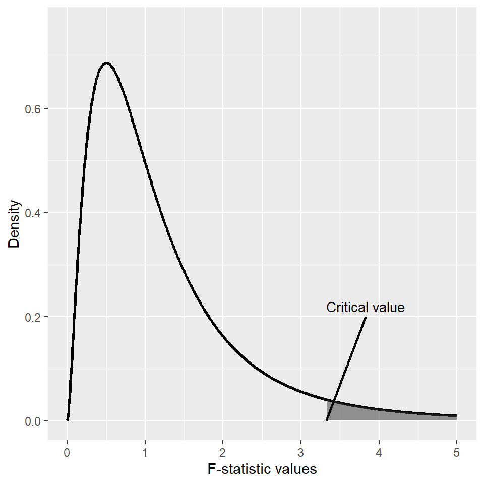
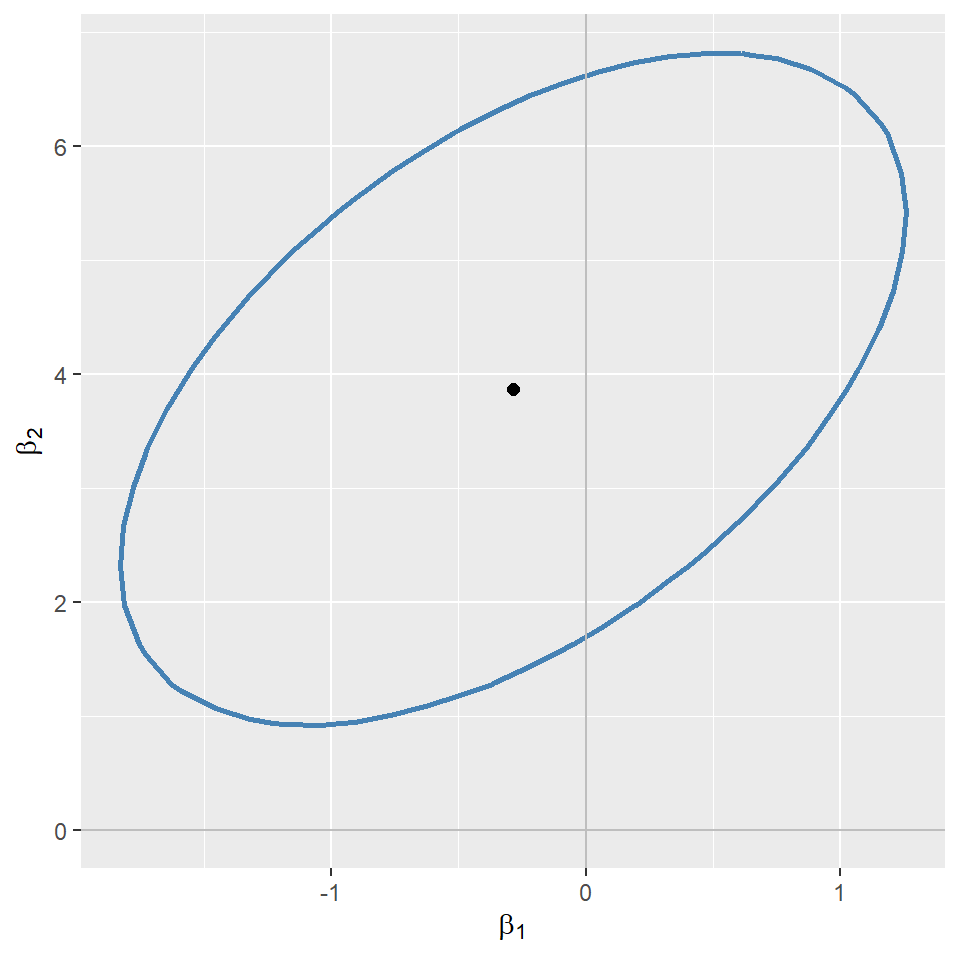
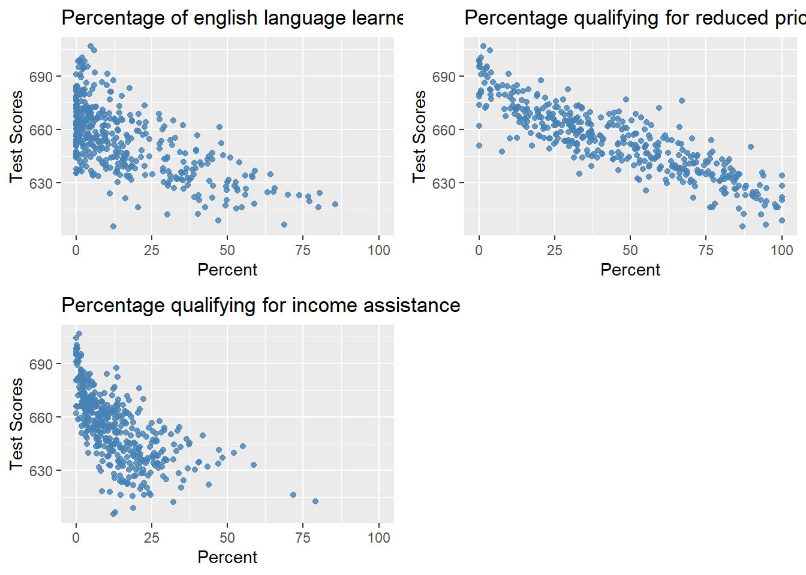

16 Hypothesis Tests and Confidence Intervals in Multiple Regression
16.1 Hypothesis tests and confidence intervals for a single coefficient
Consider the following multiple regression model: \[ \begin{align} Y_i=\beta_0+\beta_1X_{1i}+\beta_2X_{2i}+\dots+\beta_kX_{ki}+u_i, \end{align} \tag{16.1}\] for \(i=1,2,\dots,n\). We want to test \(H_0:\beta_j=\beta_{j0}\) versus \(H_1:\beta_j\ne\beta_{j0}\), where \(\beta_{j0}\) is the hypothesized value (known) and \(j=1,2,\dots,k\). As in Chapter 14, we can follow the following steps to test the null hypothesis:
- Step 1: Use R to compute the standard error of \(\hat{\beta}_j\), denoted as \(\text{SE}(\hat{\beta}_j)\).
- Step 2: Compute the \(t\)-statistic under \(H_0\): \(t=\frac{\hat{\beta}_j-\beta_{j0}}{\text{SE}(\hat{\beta}_j)}\).
- Step 3: Compute the \(p\)-value under \(H_0\): \(\text{p-value}=2\times\Phi(-|t^{act}|)\), where \(t_{calc}\) is the \(t\)-statistic computed in Step 2.
- Step 4: Reject \(H_0\) at the \(5\%\) significance level if \(\text{p-value}<0.05\), or equivalently, if \(|t_{calc}|>1.96\).
The theoretical justification for this procedure is based on the large-sample properties of the OLS estimators, as summarized in Theorem 15.2 of Chapter 15. In particular, this testing approach requires a large sample size to ensure that the normal distribution provides a good approximation to the sampling distribution of the \(t\)-statistic.
Recall that the \(95\%\) two-sided confidence interval for \(\beta_j\) is an interval that contains \(\beta_j\) with a \(95\%\) probability. When the sample size is large, the \(95\%\) two-sided confidence interval for \(\beta_j\) is given by \[ \begin{align} \left[\hat{\beta}_j-1.96\times\text{SE}(\hat{\beta}_j),\,\hat{\beta}_j+1.96\times\text{SE}(\hat{\beta}_j)\right], \end{align} \]
for \(j=1,\dots,k\).
16.1.1 Application to test scores and the student–teacher ratio
For our test score example, we consider the following model: \[ \begin{align} \text{TestScore}=\beta_0+\beta_1\times\text{STR}+\beta_2\text{Expn}+\beta_3\times\text{PctEL}+u, \end{align} \tag{16.2}\]
where PctEL is the percentage of English learners in the district and Expn is the total annual expenditures per pupil in the district in thousands of dollars.
# Import data
data <- read_excel("data/caschool.xlsx")
# Scale expenditure to thousands of dollars
data$expn <- data$expn_stu / 1000
# Display column names
colnames(data) [1] "Observation Number" "dist_cod" "county"
[4] "district" "gr_span" "enrl_tot"
[7] "teachers" "calw_pct" "meal_pct"
[10] "computer" "testscr" "comp_stu"
[13] "expn_stu" "str" "avginc"
[16] "el_pct" "read_scr" "math_scr"
[19] "expn" # Estimate the model
model1 <- lm(testscr ~ str + expn + el_pct, data = data)We estimate the model by assuming both homoskedastic and heteroskedastic error terms. We use the modelsummary function to present the estimation results given in Table 16.1. Note that we use the vcov = list("classical", "HC1") argument to provide homoskedasticity-only standard errors and heteroskedasticity-robust standard errors.
modelsummary(
list("Homoskedastic Model" = model1, "Heteroskedastic Model" = model1),
vcov = list("classical", "HC1"),
fmt = 3,
stars = TRUE,
gof_omit = "AIC|BIC|Log.Lik"
)| Homoskedastic Model | Heteroskedastic Model | |
|---|---|---|
| (Intercept) | 649.578*** | 649.578*** |
| (15.206) | (15.458) | |
| str | -0.286 | -0.286 |
| (0.481) | (0.482) | |
| expn | 3.868** | 3.868* |
| (1.412) | (1.581) | |
| el_pct | -0.656*** | -0.656*** |
| (0.039) | (0.032) | |
| Num.Obs. | 420 | 420 |
| R2 | 0.437 | 0.437 |
| R2 Adj. | 0.433 | 0.433 |
| F | 107.455 | 147.204 |
| RMSE | 14.28 | 14.28 |
| Std.Errors | IID | HC1 |
| + p < 0.1, * p < 0.05, ** p < 0.01, *** p < 0.001 | ||
We consider testing \(H_0:\beta_1=0\) versus \(H_1:\beta_1\ne0\). Using heteroskedasticity-robust standard errors, we can compute the \(t\)-statistic as \(t=\frac{\hat{\beta}_1-0}{\text{SE}(\hat{\beta}_1)}=-0.29/0.48=-0.60\). Since \(|t|=0.60<1.96\), we fail to reject \(H_0\).
The p-value is \(2\Phi(-|t_{calc}|)=2\Phi(-0.60)\). Using the following code chunk, we find that \(p\)-value\(=0.552>0.05\), and thus, we fail to reject \(H_0\) at the \(5\%\) significance level. Both the \(t\)-statistic and the \(p\)-value suggest that the student-teacher ratio does not have a statistically significant effect on the test scores at the \(5\%\) significance level.
# Heteroskedasticity-robust covariance matrix
vcov_robust <- vcovHC(model1, type = "HC1")
# Robust coefficient test
robust_test <- coeftest(model1, vcov. = vcov_robust)
# Extract robust t-value for 'str'
t <- robust_test["str", "t value"]
# Two-sided p-value using standard normal distribution
p_value <- 2 * pnorm(-abs(t))
# Round to 3 decimals
round(p_value, 3)[1] 0.552Using the heteroskedasticity-robust standard error reported in Table 16.1, the \(95\%\) two-sided confidence interval for \(\beta_1\) is \[ \left[\hat{\beta}_1-1.96\times\text{SE}(\hat{\beta}_1),\,\hat{\beta}_1+1.96\times\text{SE}(\hat{\beta}_1)\right]=[-1.23,\,0.65]. \]
Since the confidence interval includes the hypothesized value \(0\), it favors \(H_0\), i.e., we fail to reject \(H_0\) at the \(5\%\) significance level. Alternatively, we can compute the \(95\%\) two-sided confidence interval for \(\beta_1\) in the following way:
# Heteroskedasticity-robust covariance matrix
vcov_robust <- vcovHC(model1, type = "HC1")
# Robust coefficient test
robust_test <- coeftest(model1, vcov. = vcov_robust)
# The estimate of beta1
beta1_hat <- robust_test["str", "Estimate"]
# Robust standard error
se_robust <- robust_test["str", "Std. Error"]
# The critical value
z <- qnorm(0.975)
# The confidence interval bounds
ci_lower <- beta1_hat - z * se_robust
ci_upper <- beta1_hat + z * se_robust
# Combine into a vector and round
round(c(ci_lower, ci_upper),3)[1] -1.231 0.65816.2 Tests of joint hypotheses
A joint hypothesis imposes two or more linear restrictions on the coefficients of the model. In particular, we consider the following joint null and alternative hypotheses: \[ \begin{align*} &H_0: \underbrace{\beta_j=\beta_{j0}}_{\text{1st restriction}},\,\underbrace{\beta_l=\beta_{l0}}_{\text{2nd restriction}},\dots,\underbrace{\beta_m=\beta_{m0}}_{\text{qth restriction}},\\ &H_1: \text{At least one restriction does not hold}, \end{align*} \]
where \(\beta_{j0}, \beta_{l0},\dots,\beta_{m0}\) are hypothesized known values. Two specific examples are given in the following: \[ \begin{align*} &H_0: \beta_1=0, \beta_3=0,\\ &H_1: \text{At least one restriction is false}, \end{align*} \] \[ \begin{align*} &H_0: \beta_1=0, \beta_3+2\beta_5=1,\\ &H_1: \text{At least one restriction is false}. \end{align*} \]
Note that in both examples, the joint null hypothesis specifies linear restrictions for the coefficients. A joint null hypothesis can be tested using an \(F\)-statistic. To express the \(F\)-statistic, we first need to formulate the null hypothesis in matrix form. Using matrix notation, we note that a joint null hypothesis that involve \(q\) linear restrictions on parameters can be expressed as
\[ \begin{align} H_0:\bs{R}\bs{\beta}=\bs{r}, \end{align} \]
where \(\bs{R}\) is the \(q\times(k + 1)\) matrix specifying restrictions, \(\bs{\beta}=(\beta_0,\dots,\beta_k)^{'}\) is the \((k+1)\times1\) vector of parameters, and \(\bs{r}\) is the \(q\times1\) vector. In the following example, we show how \(\bs{R}\) and \(\bs{r}\) can be specified for two joint null hypotheses.
Example 16.1 (Specifying joint null hypotheses) Consider \(H_0:\beta_1=0,\beta_2=0, \beta_3=3\). For this null hypothesis, we have \[ \begin{align} \bs{R}= \begin{pmatrix} 0&1&0&0&0&\cdots&0\\ 0&0&1&0&0&\cdots&0\\ 0&0&0&1&0&\cdots&0\\ \end{pmatrix}_{3\times(k+1)} \quad\text{and}\quad \bs{r}= \begin{pmatrix} 0\\ 0\\ 3 \end{pmatrix}. \end{align} \] If we consider \(H_0:\beta_1=0\) and \(\beta_2+2\beta_3=1\), then we have \[ \begin{align} \bs{R}= \begin{pmatrix} 0&1&0&0&0&\cdots&0\\ 0&0&1&2&0&\cdots&0 \end{pmatrix}_{2\times(k+1)} \quad\text{and}\quad \bs{r}= \begin{pmatrix} 0\\ 1 \end{pmatrix}. \end{align} \]
Note that in the second case, we have the restriction \(\beta_2+2\beta_3=1\) involving two parameters. However, the total number of restrictions in \(H_0:\beta_1=0\) and \(\beta_2+2\beta_3=1\) is still \(q=2\).
To test \(H_0:\bs{R}\bs{\beta}=\bs{r}\), we use the following heteroskedaticity-robust \(F\)-statistic: \[ \begin{align} F=\left(\bs{R}\hat{\bs{\beta}}-\bs{r}\right)^{'}\left(\bs{R}\hat{\bs{\Sigma}}\bs{R}^{'}\right)^{-1}\left(\bs{R}\hat{\bs{\beta}}-\bs{r}\right)/q, \end{align} \] where \(\hat{\bs{\Sigma}}\) is the estimate of heteroskedasticity-robust variance of \(\hat{\bs{\beta}}\). When the sample size is large, the distribution of \(F\)-statistic is approximated by \(\chi^2_q/q\equiv F_{q,\infty}\). In Chapter 28, we prove that the sampling distribution of the \(F\)-statistic is approximated by \(F_{q,\infty}\) under the null hypothesis.
To test the null hypothesis, we can follow the steps below:
- Step 1: Use R to compute the \(F\)-statistic.
- Step 2: For a given significance level \(\alpha\), use R to determine the critical value shown in Figure 16.1. If \(F\)-statistic\(>\)critical value, then reject the null hypothesis at the \(5\%\) significance level.
- Step 3: The \(p\)-value is \(P(F_{q,\infty}>F_{calc})\), where \(F_{calc}\) is the actual value computed in Step 1. If \(p\)-value\(<0.05\), reject the null hypothesis at the \(5\%\) significance level.
# Parameters
d1 <- 5
d2 <- 10
alpha <- 0.05
# Data for the F distribution
x <- seq(0, 5, length.out = 1000)
df_data <- data.frame(
x = x,
y = df(x, df1 = d1, df2 = d2)
)
# Critical value
critical_value <- qf(1 - alpha, df1 = d1, df2 = d2)
# ggplot
ggplot(df_data, aes(x = x, y = y)) +
geom_line(linewidth = 1) +
geom_area(
data = subset(df_data, x > critical_value),
aes(x = x, y = y),
alpha = 0.5
) +
annotate(
"segment",
x = critical_value + 0.5, y = 0.2,
xend = critical_value, yend = 0,
linewidth = 0.8
) +
annotate(
"text",
x = critical_value + 0.5, y = 0.22,
label = "Critical value",
size = 3.5
) +
labs(
x = "F-statistic values",
y = "Density"
) +
coord_cartesian(xlim = c(0, 5),
ylim = c(0, max(df_data$y) * 1.1))
Most statistical software, including R, returns an overall regression \(F\)-statistic by default. This \(F\)-statistic is computed for the following null and alternative hypotheses: \[ \begin{align*} &H_0: \beta_1=0, \beta_2=0,\dots,\beta_k=0,\\ &H_1: \text{At least one restriction is false}. \end{align*} \]
Under the null hypothesis, all regressors are irrelevant, yielding a restricted model that only includes an intercept term. In large sample, the overall regression \(F\)-statistic has an \(F_{k,\infty}\) distribution under the null hypothesis.
A special case arises when we want to test a single restriction, i.e., when we have \(q=1\). In this case, the null hypothesis becomes \(H_0: \beta_j={\beta_{j0}}\), and the \(F\)-statistic is equal to the square of the \(t\)-statistic.
There is a simple formula for the \(F\)-statistic that holds only under homoskedasticity. To introduce this formula, we first need to define the restricted and unrestricted models. We call the model under the null hypothesis the restricted model, and the model under the alternative hypothesis the unrestricted model. For example, consider \(H_0:\beta_1=0,\beta_2=0\) for the model in Equation 16.2. Then, we have
- Restricted model: \(\text{TestScore}=\beta_0+\beta_3\times\text{PctEL}+u\),
- Unrestricted model: \(\text{TestScore}=\beta_0+\beta_1\times\text{STR}+\beta_2\text{Expn}+\beta_3\times\text{PctEL}+u\).
Then, the homoskedasticity-only \(F\)-statistic is \[ \begin{align} F&=\frac{(SSR_r-SSR_u)/q}{SSR_u/(n-k_u-1)}=\frac{(R^2_u-R^2_r)/q}{(1-R^2_u)/(n-k_u-1)}, \end{align} \tag{16.3}\]
where
- \(SSR_r\) is the sum of squared residuals from the restricted regression,
- \(SSR_u\) is the sum of squared residuals from the unrestricted regression,
- \(R^2_r\) is the \(R^2\) from the restricted regression,
- \(R^2_u\) is the \(R^2\) from the unrestricted regression,
- \(q\) is the number of restrictions under the null, and
- \(k_u\) is the number of regressors in the unrestricted regression.
Under homoskedasticity, the difference between the homoskedasticity-only \(F\)-statistic and the heteroskedasticity-robust \(F\)-statistic vanishes as the sample size gets larger. Thus, the sampling distribution of the homoskedasticity-only \(F\)-statistic is approximated by \(F_{q,\infty}\) when the sample size is large. That is, we can use the critical values from \(F_{q,\infty}\) for the homoskedasticity-only \(F\)-statistic.
It is important to note that the homoskedasticity-only \(F\)-statistic is only valid when the error terms are homoskedastic. Stock and Watson (2020) write that “Because homoskedasticity is a special case that cannot be counted on in applications with economic data—or more generally with data sets typically found in the social sciences—in practice the homoskedasticity-only \(F\)-statistic is not a satisfactory substitute for the heteroskedasticity-robust \(F\)-statistic.” Therefore, we recommend using the heteroskedasticity-robust \(F\)-statistic in all cases.
There is also a special case where the homoskedasticity-only \(F\)-statistic has an exact sampling distribution. This case arises when the error terms are homoskedastic and normally distributed. When this condition holds, the homoskedasticity-only \(F\)-statistic in Equation 16.3 has an \(F_{q,n-k_u-1}\) distribution under the null hypothesis, irrespective of the sample size. Also, recall that \(F_{q,n-k_u-1}\) converges to \(F_{q,\infty}\) when \(n\) is large. Thus, when the sample size is sufficiently large, we expect that the difference between the two distributions will be small. However, when the sample size is small, both distributions can yield different critical values.
16.2.1 Application to test scores and the student–teacher ratio
We consider the model in Equation 16.2 and want to test \[ \begin{align*} &H_0:\beta_1=0,\beta_2=0,\\ &H_1:\text{At least one coefficient is not zero}. \end{align*} \]
In R, we can use the linearHypothesis function from the car package to compute the F-statistic. This function returns the homoskedasticity-only F-statistic by default. To get the heteroskedasticity-robust F-statistic, we need to supply the white.adjust = "hc1 argument.
# Heteroskedasticity-robust F-statistics
linearHypothesis(model1, c("str = 0", "expn = 0"), white.adjust = "hc1")
Linear hypothesis test:
str = 0
expn = 0
Model 1: restricted model
Model 2: testscr ~ str + expn + el_pct
Note: Coefficient covariance matrix supplied.
Res.Df Df F Pr(>F)
1 418
2 416 2 5.4337 0.004682 **
---
Signif. codes: 0 '***' 0.001 '**' 0.01 '*' 0.05 '.' 0.1 ' ' 1The heteroskedasticity-robust \(F\)-statistic is 5.43 with a \(p\)-value of 0.0047. Since the \(p\)-value is less than 0.05, we reject the null hypothesis at the \(5\%\) significance level.
Since the \(F\)-statistic has \(F_{2,\infty}=\chi^2_2/2\) under the null distribution, we have \[ p-\text{value}=P(F_{q,\infty}>F_{calc})=P(\chi^2_2/2>F_{calc})=P(\chi^2_2>2\times F_{calc}), \]
where \(F_{calc}=5.43\). Thus, we can alternatively compute the \(p\)-value in the following way:
# P-value of the F-statistic (chi-square approximation)
pchisq(2 * 5.43, df = 2, lower.tail = FALSE)[1] 0.004383096Note that the above \(p\)-value is slightly different from the one provided by the linearHypothesis function. This function uses \(F_{q,n-k_u-1}\) as the null-distribution of the F-statistic. Thus, to get the same result, we need to resort to \(F_{q,n-k_u-1}=F_{2,416}\):
# P-value of the F-statistic (F-distribution)
pf(5.43,df1=2, df2=416, lower.tail = FALSE)[1] 0.004699342We know that the \(F\)-statistic has \(F_{2,\infty}=\chi^2_2/2\) under the null distribution. Thus, the critical value at the the \(5\%\) significance level is approximately \(3\), as shown below. Since \(F\)-statistic\(=5.43>3\), the \(F\)-statistic also suggests rejection of the null hypothesis at the \(5\%\) significance level.
# Critical value
qchisq(1 - 0.05, df = 2) / 2[1] 2.995732The overall regression \(F\)-statistic given in Table 16.1 is for testing \(H_0:\beta_1=0,\beta_2=0, \beta_3=0\) versus \(H_1:\text{At least one coefficient is not zero}\). We can get the result in the second column by using the following code chunk:
linearHypothesis(model1, c("str=0", "expn=0", "el_pct=0"), white.adjust = "hc1")
Linear hypothesis test:
str = 0
expn = 0
el_pct = 0
Model 1: restricted model
Model 2: testscr ~ str + expn + el_pct
Note: Coefficient covariance matrix supplied.
Res.Df Df F Pr(>F)
1 419
2 416 3 147.2 < 2.2e-16 ***
---
Signif. codes: 0 '***' 0.001 '**' 0.01 '*' 0.05 '.' 0.1 ' ' 1Finally, we consider the null and alternative hypothesis of the following form: \[ \begin{align} H_0:\beta_1=\beta_2\quad\text{versus}\quad H_1:\beta_1\ne\beta_2 \end{align} \]
The null hypothesis imposes a single restriction (q=1) on two parameters. Since the restriction is linear in terms of parameters, we can still use the \(F\)-statistic to test this null hypothesis.
linearHypothesis(model1, "str = expn", white.adjust = "hc1")
Linear hypothesis test:
str - expn = 0
Model 1: restricted model
Model 2: testscr ~ str + expn + el_pct
Note: Coefficient covariance matrix supplied.
Res.Df Df F Pr(>F)
1 417
2 416 1 8.9403 0.002955 **
---
Signif. codes: 0 '***' 0.001 '**' 0.01 '*' 0.05 '.' 0.1 ' ' 1The heteroskedaticity-robust \(F\)-statistic is 8.9 with a \(p\)-value of 0.003. Thus, we reject the null \(H_0:\beta_1=\beta_2\) at the \(5\%\) significance level.
16.3 The Bonferroni test of a joint hypothesis
In this section, we briefly describe the Benferroni approach for testing joint null hypotheses. In this approach, we use individual \(t\)-statistics along with a critical value that ensures the probability of the Type-I error does not exceed the desired significance level.
Let \(H_0:\beta_1=\beta_{10}\) and \(\beta_2=\beta_{20}\), where \(\beta_{10}\) and \(\beta_{20}\) are the hypothesized values, be the joint null hypothesis. Then, the Bonferroni approach for testing this null hypothesis consists of the following steps:
- Compute the individual \(t\)-statistics \(t_1\) and \(t_2\), where \(t_1\) is the \(t\)-statistic for \(H_0:\beta_1=\beta_{10}\) and \(t_2\) is the \(t\)-statistic for \(H_0:\beta_2=\beta_{20}\).
- Choose the critical value \(c\) such that the probability of Type-I error is no more than the desired significance level.
Then, we fail to reject the null hypothesis if \(|t_1|\leq c\) and \(|t_2|\leq c\); otherwise, we reject the null hypothesis.
The important step in the Bonferroni test is choosing the correct critical value that corresponds to the desired significance level (the probability of the Type-I error). Let \(Z\) be a random variable that has a standard normal distribution, i.e., \(Z\sim N(0,1)\) and \(c\) be the critical value. Then, we can determine an upper bound for the probability of the Type-I error in the following way: \[ \begin{align} P_{H_0}(\text{Individual t-statistics rejects})&= P_{H_0}(\text{$|t_1|> c$ or $|t_2|> c$ or both})\\ &\leq P(|t_1|> c)+ P(|t_2|> c)\\ &\approx 2\times P(|Z|>c), \end{align} \]
where the inequality follows from the fact that \(P(A\cup B)\leq P(A)+P(B)\) and the last approximation follows from the fact that the sampling distributions of \(t_1\) and \(t_2\) can be well approximated by the standard normal distribution when the sample size is sufficiently large. Moreover, when the joint null hypothesis involves \(q\) restrictions, the above result suggests that the upper bound for the probability of the Type-I error is \(q\times P(|Z|>c)\). We can use this result to determine the critical value corresponding to a desired significance level. For example, if we want to ensure that the probability of the Type-I error does not exceed \(5\%\), then we can determine \(c\) from \(q\times P(|Z|>c)=0.025\).
We use the following code chunk to determine the critical values at the \(10\%\), \(5\%\), and \(1\%\) significance levels for \(q=2\), \(q=3\), and \(q=4\). The critical values are presented in Table 16.2. For example, when the joint null hypothesis involves two restrictions, the critical value at the \(5\%\) significance level is \(2.241\), which is the \(1.25\)th percentail of \(Z\).
# Significance levels and number of restrictions
alphas <- c(0.10, 0.05, 0.01)
q <- c(2, 3, 4)
# Compute Bonferroni critical values
critical_values_df <- data.frame(
`Number of Restrictions (q)` = q,
`alpha = 0.10` = qnorm(1 - 0.10 / (2 * q)),
`alpha = 0.05` = qnorm(1 - 0.05 / (2 * q)),
`alpha = 0.01` = qnorm(1 - 0.01 / (2 * q))
)
# Print the table
kable(
round(critical_values_df, 3),
align = "c",
col.names = c("Number of Restrictions (q)", "alpha=0.10", "alpha=0.05", "alpha=0.01")
)| Number of Restrictions (q) | alpha=0.10 | alpha=0.05 | alpha=0.01 |
|---|---|---|---|
| 2 | 1.960 | 2.241 | 2.807 |
| 3 | 2.128 | 2.394 | 2.935 |
| 4 | 2.241 | 2.498 | 3.023 |
Example 16.2 (The Bonferroni approach for testing joint hypotheses) We consider testing \(H_0:\beta_1=0\) and \(\beta_2=0\) in Equation 16.2 using the the Bonferroni test. According to the estimation results in the second column of Table 16.1, we have \(t_1=-0.60\) and \(t_2=2.44\). Since \(|t_1|<2.241\) and \(|t_2|>2.241\), we reject the null hypothesis at the \(5\%\) significance level. However, note that we cannot reject the null hypothesis at the \(1\%\) significance level because \(|t_1|<2.81\) and \(|t_2|<2.81\).
16.4 Confidence sets for multiple coefficients
In this section we show how to formulate confidence sets for two or more coefficients in a multiple regression model. A \(95\%\) confidence set for two or more coefficients is a set that contains the true values of the coefficients in \(95\%\) of randomly chosen samples. We can determine this set by collecting the coefficient values that cannot be rejected by the heteroskedasticity-robust \(F\)-statistic at the \(5%\) significance level. Consider the joint null hypothesis \(H_0:\beta_1=\beta_{10}\) and \(\beta_2=\beta_{20}\), where \(\beta_{10}\) and \(\beta_{20}\) are the hypothesized values. Then, the \(95\%\) confidence set for \((\beta_1,\beta_2)\) consists of the pairs \((\beta_{10},\beta_{20})\) that are not rejected by the \(F\)-statistic at the \(5\%\) significance level.
In the following code chunk, we consider the model in Equation 16.2 and construct the \(95\%\) confidence set for \((\beta_1,\beta_2)\). We first generate a grid of values around the estimated values and store these values in the str_vals and expn_vals sequences. We then compute the heteroskedasticity-robust \(F\)-statistic for each pair of values in the grid and store the resulting \(F\)-statistic values in the f_values matrix. The ellipse shown in Figure 16.2 includes the pairs of values that are not rejected by the \(F\)-statistic at the \(5\%\) significance level. This ellipse represents the \(95\%\) confidence set for \((\beta_1,\beta_2)\). Note that since the ellipse does not include \((0,0)\), we reject the joint null hypothesis \(H_0:\beta_1=0\) and \(\beta_2=0\) at the \(5\%\) significance level. Also, since the estimated correlation between the OLS estimators \(\hat{\beta}_1\) and \(\hat{\beta}_2\) is positive, the ellipse is positively oriented, as shown in the figure.
# Define the critical value
alpha <- 0.05
f_critical <- qchisq(1 - alpha, df = 2) / 2
# Extract coefficient estimates
coef_estimates <- coef(model1)[c("str", "expn")]
# Create the grid around the estimates
str_vals <- seq(coef_estimates["str"] - 2.0,
coef_estimates["str"] + 2.0,
length.out = 30)
expn_vals <- seq(coef_estimates["expn"] - 5.0,
coef_estimates["expn"] + 5.0,
length.out = 30)
grid <- expand.grid(str = str_vals, expn = expn_vals)
# Compute the F-statistic over the grid
f_values <- matrix(NA, nrow = length(expn_vals), ncol = length(str_vals))
for (i in seq_along(expn_vals)) {
for (j in seq_along(str_vals)) {
hypothesis <- c(
paste0("str = ", str_vals[j]),
paste0("expn = ", expn_vals[i])
)
f_test <- linearHypothesis(model1, hypothesis,
test = "F", white.adjust = "hc1")
f_values[i, j] <- f_test$F[2]
}
}# Plot the 95% confidence set
# Convert grid + F-values into a data frame
plot_df <- expand.grid(
str = str_vals,
expn = expn_vals
)
plot_df$f_value <- as.vector(f_values)
ggplot(plot_df, aes(x = str, y = expn, z = f_value)) +
geom_contour(
breaks = f_critical,
color = "steelblue",
linewidth = 1
) +
geom_point(
aes(x = coef_estimates["str"], y = coef_estimates["expn"]),
color = "black",
size = 2
) +
geom_hline(yintercept = 0, color = "gray") +
geom_vline(xintercept = 0, color = "gray") +
labs(
x = expression(beta[1]),
y = expression(beta[2])
)
16.5 Model specification for multiple regression
In Chapter 15, we use control variables to account for factors that can lead to omitted variable bias. Using control variables, we aim to ensure the conditional mean independence assumption for the variables of interest. However, in practice, we do not always know the right set of control variables for our application. Stock and Watson (2020) suggest a two-step approach for selecting the appropriate control variables.
In the first step, we specify a base specification that includes our variables of interest and the control variables suggested by expert judgment, related literature, and economic theory. Since expert judgment, related literature, and economic theory are rarely decisive, we also need to consider a list of candidate alternative specifications that include alternative control variables. In the second step, we should estimate each alternative specification and check whether the estimated coefficient on the variable of interest remains statistically and numerically similar. If the estimated coefficient on the variable of interest changes substantially across specifications, then we should suspect that our base specification may be subject to omitted variable bias.
When using this approach, we should remember that measures of fit-such as \(R^2\), \(\bar{R}^2\), and SER- are useful only for assessing the model’s predictive ability, not for determining whether the coefficients have a causal interpretation. Stock and Watson (2020) list the following four potential pitfalls regarding the use of \(R^2\) and \(\bar{R}^2\):
- An increase in these measures does not necessarily suggest that the added control variable is statistically significant. For assessing statistical significance, it is more appropriate to use the \(F\)-statistic, \(p\)-value, and confidence interval.
- A high value for these measures does not suggest that the model includes the set of regressors that have causal effects on the dependent variable.
- A high value for these measures does not guarantee that the most appropriate set of regressors is being used. Conversely, a low value does not necessarily mean that the chosen set of regressors is inappropriate.
- A high value for these measures does not ensure that the model is free from omitted variable bias. Omitted variable bias can only be addressed by satisfying the zero-conditional mean assumption or the conditional mean independence assumption.
16.6 Analysis of the test score data set
In this section, we use our test score data set to illustrate how a multiple linear regression model can mitigate the effect of omitted variable bias. Recall our regression model with one regressor: \[ \begin{align} \text{TestScore}=\beta_0+\beta_1\times\text{STR}+u. \end{align} \]
Besides our variable of interest str, there many other factors that affect the test score and are correlated with the student-teacher ratio. Therefore, we expand this model by considering the following additional variables related to student characteristics:
-
el_pct: the percentage of English learning students, -
meal_pct: the share of students that qualify for a subsidized or a free lunch at school, -
calw_pct: the percentage of students that qualify for the CalWorks income assistance program.
Figure 16.3 shows the scatterplots between these variables and the test scores. We observe that each variable is negatively correlated with the test scores.
# Scatterplots of Test Scores vs. Three Student Characteristics
# 1. English learners
p1 <- ggplot(data, aes(x = el_pct, y = testscr)) +
geom_point(color = "steelblue", alpha = 0.8) +
scale_x_continuous(limits = c(0, 100)) +
labs(
title = "Percentage of english language learners",
x = "Percent",
y = "Test Scores"
)
# 2. Reduced lunch
p2 <- ggplot(data, aes(x = meal_pct, y = testscr)) +
geom_point(color = "steelblue", alpha = 0.8) +
labs(
title = "Percentage qualifying for reduced price lunch",
x = "Percent",
y = "Test Scores"
)
# 3. Income assistance
p3 <- ggplot(data, aes(x = calw_pct, y = testscr)) +
geom_point(color = "steelblue", alpha = 0.8) +
scale_x_continuous(limits = c(0, 100)) +
labs(
title = "Percentage qualifying for income assistance",
x = "Percent",
y = "Test Scores"
)
# Empty plot (bottom-right)
#p_empty <- grid::nullGrob()
# Arrange in 2x2 layout
grid.arrange(
p1, p2, p3,
nrow = 2, ncol = 2
)
We consider the following five specifications. We use the second model as our base specification and the others as alternative specifications. \[ \begin{align*} &1.\, \text{TestScore}=\beta_0+\beta_1\times\text{STR}+u,\\ &2.\, \text{TestScore}=\beta_0+\beta_1\times\text{STR}+{\color{steelblue}\beta_2\times\text{el\_pct}}+u,\\ &3.\, \text{TestScore}=\beta_0+\beta_1\times\text{STR}+{\color{steelblue}\beta_2\times\text{el\_pct}+\beta_3\times\text{meal\_pct}}+u,\\ &4.\, \text{TestScore}=\beta_0+\beta_1\times\text{STR}+{\color{steelblue}\beta_2\times\text{el\_pct}+\beta_4\times\text{calw\_pct}}+u,\\ &5.\, \text{TestScore}=\beta_0+\beta_1\times\text{STR}+{\color{steelblue}\beta_2\times\text{el\_pct}+\beta_3\times\text{meal\_pct}+\beta_4\times\text{calw\_pct}}+u.\\ \end{align*} \]
The following code chunk can be used to estimate each model.
# Model 1
model1 <- lm(testscr ~ str, data = data)
# Model 2
model2 <- lm(testscr ~ str + el_pct, data = data)
# Model 3
model3 <- lm(testscr ~ str + el_pct + meal_pct, data = data)
# Model 4
model4 <- lm(testscr ~ str + el_pct + calw_pct, data = data)
# Model 5
model5 <- lm(testscr ~ str + el_pct + meal_pct + calw_pct, data = data)We use the modelsummary function to present the estimation results.
# Print results in table form
modelsummary(
list(
"Model 1" = model1,
"Model 2" = model2,
"Model 3" = model3,
"Model 4" = model4,
"Model 5" = model5
),
vcov = "HC1",
fmt = 3,
stars = TRUE,
gof_omit = "AIC|BIC|Log.Lik|F"
)| Model 1 | Model 2 | Model 3 | Model 4 | Model 5 | |
|---|---|---|---|---|---|
| (Intercept) | 698.933*** | 686.032*** | 700.150*** | 697.999*** | 700.392*** |
| (10.364) | (8.728) | (5.568) | (6.920) | (5.537) | |
| str | -2.280*** | -1.101* | -0.998*** | -1.308*** | -1.014*** |
| (0.519) | (0.433) | (0.270) | (0.339) | (0.269) | |
| el_pct | -0.650*** | -0.122*** | -0.488*** | -0.130*** | |
| (0.031) | (0.033) | (0.030) | (0.036) | ||
| meal_pct | -0.547*** | -0.529*** | |||
| (0.024) | (0.038) | ||||
| calw_pct | -0.790*** | -0.048 | |||
| (0.068) | (0.059) | ||||
| Num.Obs. | 420 | 420 | 420 | 420 | 420 |
| R2 | 0.051 | 0.426 | 0.775 | 0.629 | 0.775 |
| R2 Adj. | 0.049 | 0.424 | 0.773 | 0.626 | 0.773 |
| RMSE | 18.54 | 14.41 | 9.04 | 11.60 | 9.03 |
| Std.Errors | HC1 | HC1 | HC1 | HC1 | HC1 |
| + p < 0.1, * p < 0.05, ** p < 0.01, *** p < 0.001 | |||||
The conventional way to present estimation results is to display each estimated regression side by side, as shown in Table 16.3. We draw three main conclusions from these results:
- When comparing the estimation results in the first column with those in the other columns, we observe that the estimated coefficient on
stris halved after controlling for student characteristics. In all cases, the estimated coefficient onstris statistically significant at the \(5\%\) level. In our base specification (column 2), the estimated coefficient is approximately -1.1 and remains similar in columns 3 through 5. - Comparing the estimation results in column 1 with those in the other columns shows that including student characteristics increases the adjusted \(R^2\) substantially.
- The results in the fifth column indicate that
calw_pctbecomes redundant once we control formeal_pctandel_pct.